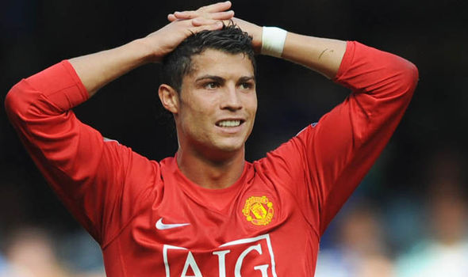

Cristiano Ronaldo dos Santos Aveiro

Дата народження: 05.02.1985
Клуби:
- Спортінг Лісабон
- Манчестер Юнайтед
- Реал Мадрид
- Ювентус
Нагороди:
- АПЛ(2007,2008,2009);
- ЛЧ (2008,2014,2016,2017,2018);
- ЧЄ (2016);
- Золотий Мяч (2008,2013,2014,2016,2017).
Біографія:
Народився 5 лютого 1985 року в муніципалітеті Фуншал, столиці автономного регіону Мадейра.
Кріштіану — молодший син Марії Долореш душ Сантуш Авейру (Maria Dolores dos Santos Aveiro)
і Жозе Дініша Авейру (Jose Dinis Aveiro). У віці восьми років він грав за любительську команду «Андоринья» («Andorinha»),
де його батько відповідав за матеріальну базу для футболістів. 1995 року Роналду підписав контракт з клубом «Насьональ».
За результатами сезону Роналду отримав запрошення на перегляд в лісабонський «Спортінг», після чого клуб з португальської
столиці підписав з ним контракт. Роналду став єдиним гравцем «Спортінга», який грав за юнацькі команди клубу до шістнадцяти,
до сімнадцяти, до вісімнадцяти років, дублі «Спортінга» і основну команду за один сезон.
У шістнадцять років футболістом зацікавився тренер англійського клубу «Ліверпуль» Жерар Ульє (Gerard Houllier), але клуб відмовився узяти
Роналду, вирішивши, що португальцеві спершу слід розвинути свої футбольні навички. Влітку «Спортинг» зустрічався з «Манчестер Юнайтед».
Вже після першого тайму здивовані грою Роналду гравці вмовили Фергюсона викупити Роналду. В тому матчі «Спортинг» переміг
«Манчестер Юнайтед».